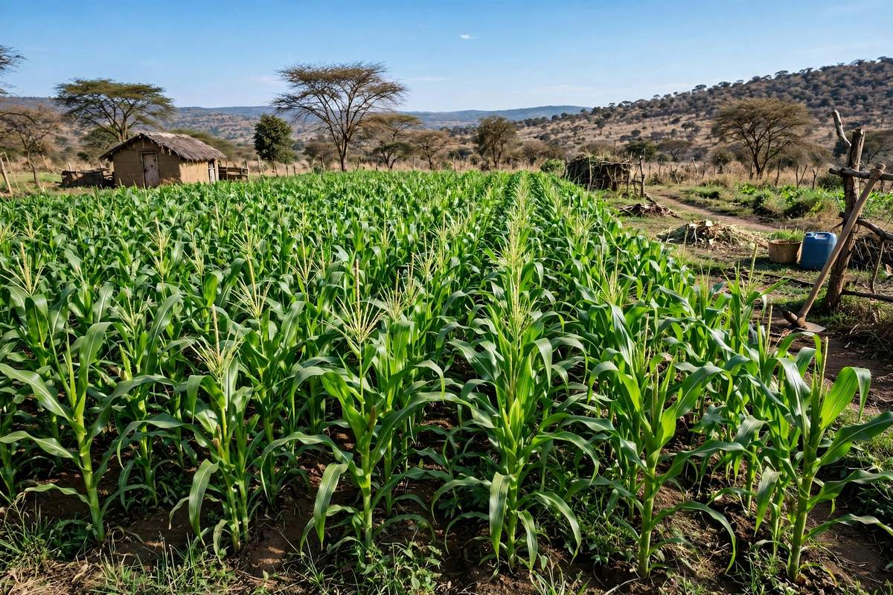

🌱 Farm Help Centre
Practical tips for crops, animals, soil, climate and selling.
📖 Problem solver: symptoms & what to do
General guidance only. For suspected notifiable diseases (FMD, anthrax, ASF, Newcastle) tell your local veterinary office immediately, and ask your extension officer before using any chemical. Seen it on your farm? Report the outbreak so neighbours can protect their animals and crops.